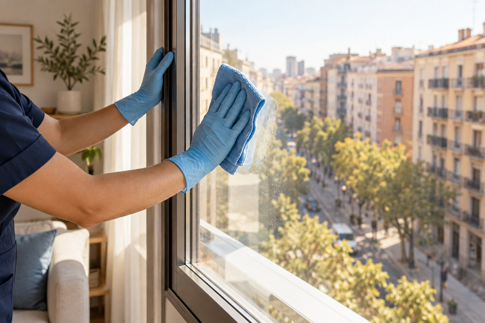
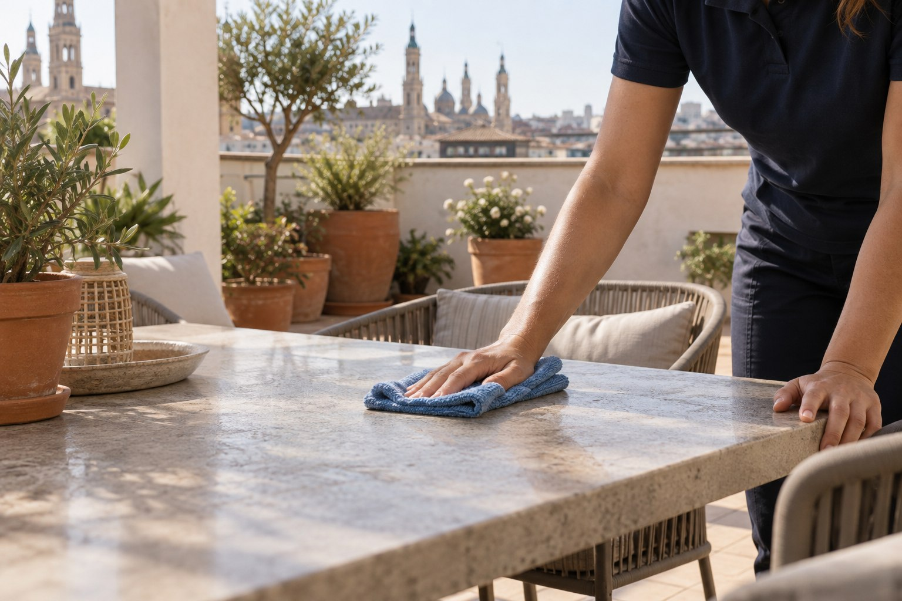
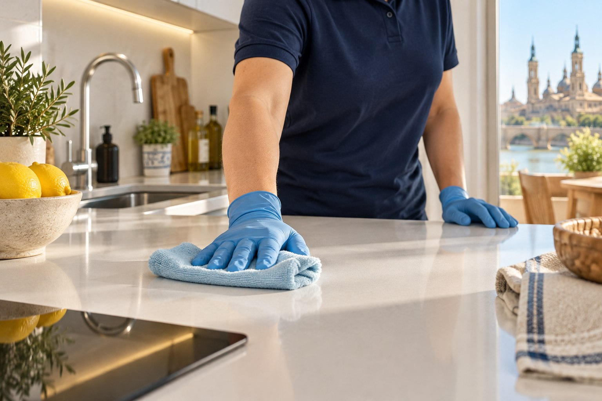
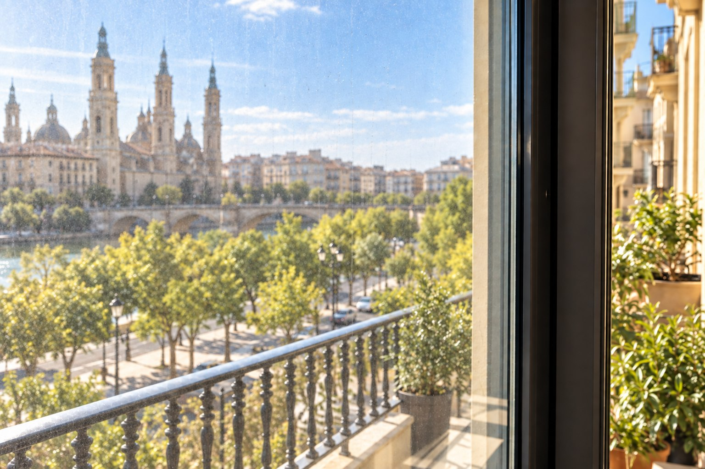

Cuéntanos el espacio.
Casa, negocio o exterior. Dinos dónde está y qué te gustaría cuidar.
Para el lugar donde vives. Para el lugar donde trabajas. Para esos rincones que merecen una nueva mirada.

No hablamos solo de lo que se ve. Hablamos de entrar en casa y sentir calma, de abrir un negocio con ganas o de volver a usar esa terraza que habías dejado pendiente.
Cuéntanos cómo es tu espacio. Te ayudamos a empezar por el servicio que tiene sentido consultar.

Pequeños gestos. Otra sensación.Entra por lo que reconoces. Dentro encontrarás el servicio concreto y qué contarnos para pedir presupuesto.
Explora los 16 servicios. Cada página te explica cuándo puede encajar, qué datos ayudan a preparar la consulta y cómo hablar con Lumis.
El cuidado de casa empieza por lo que más importa en tu día a día.

Cuando entra la luz y apetece salir, todo cambia.
Tu espacio también habla de cómo cuidas a las personas.

Cada superficie tiene su propio estado y merece una consulta precisa.


Una ventana que deja pasar la luz. Un suelo que cambia la percepción de una estancia. Un espacio al que apetece volver.
Cuéntanos qué necesitasLa misma escena, antes y después, creada para mostrar visualmente el tipo de diferencia que puede apreciarse. No es un trabajo realizado por Lumis.
Ver limpieza de cristales
Antes Después
DespuésCasa, negocio o exterior. Dinos dónde está y qué te gustaría cuidar.
Dimensiones aproximadas, materiales y unas fotografías pueden ayudar a entenderlo.
La conversación continúa directamente con Lumis por WhatsApp, sin compromiso.
Prepara un primer mensaje en menos de un minuto. Lo revisarás en WhatsApp antes de enviarlo.
Descubre su perfil oficial. Estas imágenes son ilustrativas y no representan trabajos realizados por la empresa.
Ver perfil de Instagram